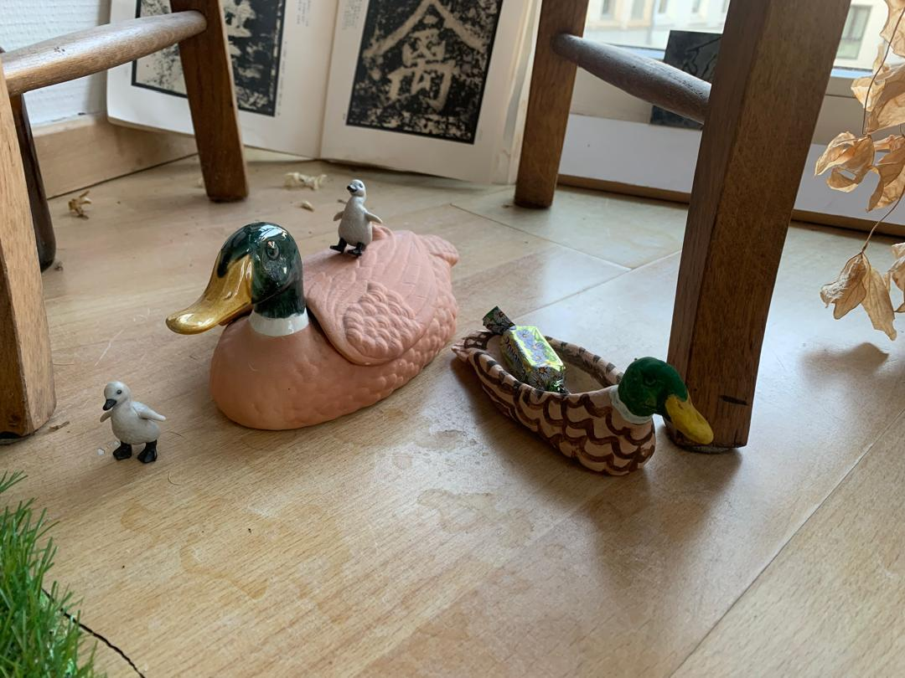

What would I teach my daughter if she was born in a Flixbus?
When the country that he knew fell apart, Zhang Daqian rebuilt it in a faraway place and called it a Garden of Eight Virtues. For those without land, gardening skills, and an established national identity, the preservation of self requires maneuvers where these disadvantages are considered. In everyday contexts they can be called tactics, but a displaced artist might call them institutional critique. It is convenient when cultural homelessness coincides with the institutional and opens the door to tentative opportunism.
There were different occasions on which I had to move. Earlier ones were caused by my parents’ emigration journey, the later ones by my own aspirations to pursue painting. Every time I ended up carrying with me a cup, handed to me by my mother before I left to Belgium. This cup has been a gift from my mother’s family in Kazakhstan – a local porcelain production. On the bottom of the cup right next to the national steppe eagle it says “Germany Style. 20 Year Guarantee” in English.
Although I never liked the way the cup looks, its national clarity touched me on an emotional level. I kept it because I admired its self-awareness. The cup was understanding of its being, made aware of it by the surrounding environment. Consequently, the cup managed to be reunited with its predetermined origin when we lived in Germany.
Another case of acute self-discovery I have witnessed in my father. When the Soviet Union started to waver and the prospects of stability declined, my father obtained a fake document stating his mother was of Jewish descend. At the time it was the easiest solution to leave Soviet Ukraine, following the route to Israel. The idea was to go to America with a transit in Vienna. Through means that I am too worried to put into writing, my father crossed the border. Soon his entry to the states was rejected and he was bound to stay in Austria.
He realized quickly that his new identity might complicate a prosperous development in Austria and discovered a passion for Christ. He joined the incredibly friendly local Jehovah Witnesses. The language courses were a plus.
Later when he was already decently integrated – working, speaking German and owning a citizenship – he went on a working trip to Kazakhstan where he met my mother. She was an exquisitely trained ballerina from a rural Muslim family. After dating for three weeks, they got married.
It is there that he became aware of his other before unnoticed nature. He was Muslim. The following years he spent reading the Quran, through my birth till my high school. Nowadays he doesn’t practice strictly, but partakes in Ramadan yearly.
The onset of awareness can also happen on a level of a nation. My last June I dedicated to reading the national Kyrgyz epos Manas, intrigued by it being the longest poem in the world.
After the collapse of Soviet Union, the new Kyrgyz state has decided to use Manas as a foundation for rebuilding the national identity. Apart from the sheer artistic value that the epos carries, it is also an important documentation of the historical timeline of its people and their land.
To me, the biggest value of the epos is in its process. I took the liberty to translate two verses:
Issyk-Kul was splashing below.
Probably the god Koke-Tengir (Tengri),
Collected his last tear,
Drop by drop in his palm,
Gave it to the Kyrgyz to last centuries.
Already a few verses later the same lake was given to the Kyrgyz not by the ancient Turkic Sky-God but by another important someone:
Holy mountains of Ala-Too,
Valleys, rivers and jailoo (pasture),
Our Issyk-Kul – like paradise,
Given to Kyrgyz by Allah.
A few months ago I was entangled in an argument with my mother after complaining about my identity insecurities as a second generation immigrant. Her position was that it is mainly an issue of my outlook and that I should view myself as a child of the world, belonging everywhere in Europe.
To mind comes an answer of Belgium’s prime minister to a question from a German newspaper:
“If he lived in our country, even Obama would still be a foreigner.”
There is a general believe, that belonging comes from knowing the local language. I personally can think of at least two arguments to counter this – one by quoting the Belgian prime minister, and the other by sharing an incident from my family’s last New Year celebration.
There were two things special about that New Year’s Eve. The first being that the event happened in my parents’ new apartment in a rural city that I have never visited before. This city is practically a small town in western Germany, that does not even have a grocery store. Before it has been established as a military base for American soldiers and now it has been transformed into a university campus and a few residential living blocks. The low price of rent has been an attraction for the newly growing Ukrainian community. The town itself has an already established Chinese community, whose reasons for living there we still do not understand. On the Robinson Street in the residence New York, my parents organized a celebration for neighbors, friends, me and my companion.
The second special occurrence was that I brought with me my boyfriend, who would meet them for the first time.
Among the guests have been my parents’ friend Alex, who is a newer friend and whom I don’t know too well. Our conversation has started rather forced, initiated by the sitting situation. Alex was seated right across from me. It is also important to note, that the language barrier has been rather strong among the guests – some spoke only Russian, some managed a form of English, others spoke no Russian at all, and German turned out to be in absolute minority.
Alex spoke Russian and Ukrainian, but struggled with English and German, so seating him across from me seemed like a good idea; I could both entertain him and translate if needed.
The conversation took a friendly but predictable turn. I was asked about my boyfriend and our new relationship. He asked me how I experienced living together, and I answered “very comfortable – очень удобно”. It was a long lasting mistake.
Alex, who was becoming increasingly poetic after several drinks, was appalled by my coldhearted reply. In retrospective I realized that a big chunk of misunderstanding has been caused by my ignorance of the intricacies of meaning. My “comfortable – удобно” I have related to the German “Wohl” or the English “comfort”, both words associated in my head with things warm, cozy and somehow even fuzzy.
The Russian “comfortable – удобно”, which is the most straightforward translation, carries a meaning of cold convenience, a utilitarian approach. The Ukrainian “зручно” even has a note of manual labor. After this reply Alex was convinced that we started our relationship for wrong reasons, and I became once again convinced of my misplaced internationalization.
I hold the opinion that most people who come to live in Antwerp come here without an intrinsic beer preference. I can base this conviction firstly on the observation I have made of my international friends and secondly on the natural law of substitution and imitation. The beer preference is a culminated taste.
A good way to attempt to be in place for someone who is out of place is to imitate the local customs and behaviors. Then of course, to preserve yourself within this new environment you rely on substitutions – why would there be a need for mixmarkts and amazing orientals otherwise? If the orientals at least offer some sort of novelty to the local residents, then the mixmarkts just mainly provide a complex sauer(kraut) selection. The deterioration can reach as far as me buying fake Mozartkugeln similar to the ones I used to eat in Vienna, which in themselves were already a replica of the ones from Salzburg.
I can think of three instances where I became aware of the importance of adaptations among those who search their place. They spiral from deliberate to undeliberate, representing a progressively intimate revelation.
Firstly – adaptation can serve as a substitution. One of my mother’s friends who owned numerous cd collections had a rather catchy adaptation of the song Brother Louie from the German band Modern Talking. Sergey Minaev, a Soviet singer and musician, supplied the German version with Russian lyrics of his own writing to meet the need of the Russian speaking audience. The music stayed unchanged:
I chose one way to go to south,
My only route is to Crimea.
I really bloom next to the sea,
Thus I confess.
Time has proven this version to have a stronger prophetic power than the German original.
I dare to assign this accidental relevance to the particular situation in which the lyrics have been written. Which would be by a Russian for Russians in Russia, covering what Minaev thought to be a particular lack in the music industry at the time – great songs that his people could not enjoy because of a language barrier and difference in mentality. A worthy reason for creation in my humble opinion.
Secondly – adaptation can be an imitation, or what is normally called ‘a parody’. It is an insight that I obtained after watching the film Zelig by Woody Allen. Zelig is a mockumentary about Leonard Zelig, a man with an extraordinary capability to assimilate into any group of people.
Here I can even say that I obtained two revelations at once – one I will try to sketch out in the next paragraphs, and the other is that I quite misunderstood the film’s official intention.
Perhaps due to my IP address, one of the first things to come out after searching the film is an article written by a lecturer from KU Leuven. To my surprise the interpretation provided by her and to a certain degree by Woody Allen himself differed radically from my own thoughts on the movie. They related the film to the banality of evil, somewhat as a visualization of the dangers of conformity in regards to totalitarianism.
The only danger of conformity I could read from the movie was the usual humiliation of becoming an undeliberate parody. Why that would be Zelig I concluded from his self-introduction: As a boy, Leonard is frequently bullied by anti-Semites. His parents, who never take his part and blame him for everything, side with the anti-Semites. They punish him often by locking him in a dark closet. When they are really angry they get into the closet with him.
In my head Zelig was a tasteful visualization of the tragedy of displacement among other issues, a motive I see very often in things that have little to do with it.
Already from this introduction I thought I can read everything – the displacement of the family, Leonard’s difficulty of integration during his childhood and the pressure of assimilation coming from his parents. And to remedy all that the developed skill of imitating others. This is what I thought made the character comedic; Zelig is funny because he is unconscious in his imitation, achieving the absolute mastery of camouflage not through a specific strategy but just through internalized trauma. What can be more hilarious than that?
But even this case is only half as ridiculous as craving a particular fermentation of a particular vegetable in an alien country. And more than that the Russian Mozartkugeln from the store of Volga-Germans in Belgium. That would be a parody of self and the third form of adaptation.

Although I am not Baudrillard, I, too, was once asked about the future of art. That was some 20 years ago. At that time I had already departed from the idea of nullity and waste management and glimpsed a new cycle - indeed somewhat like fashion. In fashion, trends are usually replaced after 10-15 years, and then the cycle slowly returns again to what was once en vogue. In art I would not be able to set an exact time frame, but I can say that we are not yet recycling the banality from Baudrillard's Conspiracy. On the opposite, we are providing individually proposed solutions to global crises.
The artist, in fact, has a very important role to fulfill. The artist is a nominated representative of repressed individual voices, usually the ones in their head. Although the top of the ladder can manage to give voice with some objective value, the objectivity comes from higher volume amplified by greater sums from greater institutions. The achievements of contemporary art are attributed to how it changed the narrative of migration, while the election results consistently made it seem like the opinion shifted to the negative. Perhaps in that there was an unforeseen effect of art on politics. Perhaps not. And still, it is not my intention to write off the efforts of the artists as blatant trend-hopping and personal opportunism. Like in other areas of life, the responsibility was placed on individual shoulders, their own talent and effort.
I remember I once complained about this to my mother. She answered with a story about one of their neighbors, who moved to their town from Ukraine. Her husband stayed in Ukraine, and no matter how hard she tried and whom she contacted, he was not let out of the country. In her desperation and fear that he would be drafted, she set out a plan of action. Young men are let out of Ukraine on several strict conditions. One of these is that husbands with disabled wives do not have to defend and can move abroad. While she didn't go so far as to cut her leg off, she divorced him and hired a woman with a disability to temporarily marry him. With his new wife, he left the country and later remarried.
If I didn't read intellectuals, I would be deeply offended by the insinuation of the story. It is almost like such a level of brute survival strength is a common trait that can be expected of everyone. Yet now I know that after the onset of modernity, the individual has to carve his place not only to level up but just to exist, to justify his birth class. Justifying a belonging to a class of a post-Soviet second-generation migrant even sounded like a plausible PhD objective, at least for a proposal.
In Vienna the individual carving of class is gently taught to the young by the photo props of Sisi with empty heads, where you can insert your own face. But those who know Sisi at least somewhat know that she had an obsession with poetry and Heinrich Heine, the failed merchant-Jewish poet. In Heine she saw a prophet who would speak his poems through her; she called him Master. To show her honor to him, she decided to erect a statue in his name and place it in his hometown, Düsseldorf. This caused a public backlash, and she had to give up the idea. The prototype she placed in her villa in Greece and later moved to Paris. Heine in stone repeated the destiny of the poet, who was exiled to France.
The idea of the exiled genius reads very attractively, a position that Sisi's own poems could not benefit from. And yet in today's context the exiled genius died, this archetype disappeared. Today's artist has no time to develop a genius, as he is forced to first establish the occurrence of his exile and then propose a looking lens, preferably with an adjustable focus. When I was still in school, in later years the only student with a last name ending with an -ov, the history teacher referred all the questions about communism and Soviet totalitarianism, a term Germans have a special attachment to, to me. Germany has a prescription on what, how, and to what extent students learn about the period of national socialism. A special attention is dedicated to the attrocities commited by the Germans, to which the teacher would supply how the Russian army raped her grandmother, just as a little gesture of maintaining a balanced perspective. When the lesson would tilt into discussion about Germany's closest oponent - the Soviet army—she would maintain close eye contact with me and verify her material. Did people under communism suffer as terribly? Can the concentration camps be compared to gulags? Did Stalin also separate people by ethnicity? At some point I was tired of my teacher's inherited guilt and decided to grant her forgiveness from all my fallen ancestors. I printed out a photoshopped article about how Stalin was elected as a person of the year 2014 by Russians and brought it to class. No one could read Russian anyway.
Conclusions by the Economist on the "whataboutery" of the Biennale:
"A last justification is a version of the “whataboutery” beloved of Soviet propagandists. Other strongmen are waging wars; shouldn’t artists from their countries be excluded from Venice too? There is, in fact, a separate push to expel Israel from the biennale, on account of its allegedly genocidal treatment of the Palestinians. An open letter to that effect was signed by almost 200 artists and workers involved in the festival. And what about America, or Ethiopia, or…? That defence doesn’t stack up either. Wherever you draw the line, Russia—whose army, among its other crimes, loots and destroys Ukrainian libraries, theatres and museums—should fall on the disqualified side of it. No one invites a serial killer to their garden party."
Conclusions by Tate on Joseph Beuys' Eurasia:
"Reflecting on Eurasians, Klaus-D. Pohl notes Beuys’s statement that for a long time he had felt he was like a shepherd on reconnaissance, looking after a flock. He points out that the work suggests a person pausing in preparedness for movement across a landmass, surmising, ‘The staff will become a companion and pioneering tool for the penetration of space: from east to west – from west to east’. With the Nazi expansionist notion of Lebensraum and Putin’s more recent ideas about Eurasia in mind, a figure suggesting the ‘penetration of space’ across Eurasia must surely elicit caution. Lebensraum, the concept that a given race requires a certain amount of space for its survival, was the basis on which the Third Reich pursued an aggressive form of settler colonialism, envisaging the expulsion of most of the indigenous populace of Central and Eastern Europe. Today, Putin’s idea of Eurasia, while advancing valid concerns about the USA’s idea of its global dominance, could be understood as a means to seek a larger empire for Russia. Its related Eurasianism – championed by Putin’s strategic advisor, the philosopher, sociologist and political analyst Aleksandr Dugin – may not be fascism in the strict sense, but its conservatism and revision of fascist themes constitutes a potent and disturbing rhetoric that sees liberalism as a threat to people’s ethno-cultural survival and could, as Alan Ingram argues, be seen as neo-fascism."
"In Russia, Putin’s Eurasia is a cold form that looks increasingly like neo-fascism, espousing the expansion of intolerance as much as territory. In China, under a form of state capitalism, the super-wealthy entrepreneur lives cheek by jowl with the poverty-stricken, if gainfully employed, streetsweeper. Freedom is limited. The Chinese word for harmony, He Xie in Western characters, is invoked by the state to ensure that people work for the common good."
Conclusions by the French President Emmanuele Macron on why to love France:
"There’s a segment of young people who are influenced by certain activists whose views are often given a lot of attention, and who also repeat the narratives put forward by other powers who are the true colonisers of the 21st century – namely, the Russians and others. But when we set the record straight, as we must, there is no reason not to love France today."
Conclusions by the Russian President Vladimir Putin on the Second World War:
"Советский солдат в годы Великой Отечественной вернул суверенитет тем странам, которые капитулировали перед Адольфом Гитлером и стали соучастницами его преступлений." "During the years of the Second World War the Soviet soldier returned the souvereinity to those countries that capitulated to Adolph Hitler and became accomplices in his crimes."
Conclusions by my grandma on who is insane:
"The truly insane one was my husband."
Conclusions by the American President Donald Trump on the Athens-Sparta remark by Chinese President Xi:
"When President Xi very elegantly referred to the United States as perhaps being a declining nation, he was referring to the tremendous damage we suffered during the four years of Sleepy Joe Biden and the Biden Administration, and on that score, he was 100% correct."
The nurturing of peace, both inner and outer, has been a plight for me, like it has been for the big leaders. My boyfriend once told me about a special custom of his parents to express care and initiate reconciliation. The solution has been simple yet romantic and consisted of preparing a foot bath for the other. In my childhood my own parents were once interested in foot baths. Their interest extended from a ritual of care further into a procedure of detoxification. In their circles a device became popular that could vibrate the parasites out of the body through the feet by special waves. A foot bath was prepared, and the device was put inside. By some technology the water would become dirty and foamy, bringing to light the hidden parasites of the sitter.
I myself have been subjected to this detoxification but produced only very few parasites, a fact attributed to my young age. It was concluded that the toxins accumulate with time and the abuse of the body by the hardships of adulthood. Now, as a child of my generation, I lost the belief in the effectiveness of gadgets that my parents held but continue on the path of detoxification to reconcile others with myself and myself with others, to keep up the good vibes. During my cut-short teacher's study, I got introduced to participatory art projects and a previously unknown to me role of the artist-facilitator. The main function of such an artist is to facilitate a socially engaging artistic project with the aim to humanize a prejudiced group in the eyes of the majority. The state likes to finance such projects to assist a successful integration of more foreign foreigners. My university invited such organizations to hold presentations and talk about the projects they initiated. Two facilitators shared with us a project they were particularly proud of. The story was set in a more decaying district of Brussels (if such a description even makes any sense) in a middle school known to the inhabitants as more foreign than local. The project connected the students to bakeries around the city that would showcase their films and moving images in their stores. The works were carefully developed together with the facilitators over a course of several weeks. While initially I was induced with a warm excitement at the prospect of such a proactive social role, I was mortified at the conclusion: "The project was incredibly successful, and the local shoppers could not contain the joy from the discovery that the children had impeccable Dutch. They saw them in a different light." After that I could not reconcile myself with the thought of facilitating and quit the study.
Of course, on second thought, I have been too harsh in my verdict on facilitation. One could say, after all, that the artists did not forcefully set out to uncover the hidden treasures of an underfinanced school to the local skeptics in self-importance but only orchestrated an occasion for the students to humanize themselves as a lesson in self-detoxification. To question the morality of such a lesson would be to deny its usefulness or even necessity. That is the reality of life. Some hold more toxins than others, yet it is the others that hold the most. In a few months I myself was taught such a lesson by the German police.
As an unemployed study quitter, I was prompted by my parents to babysit our dog at their place in a German town located in the vicinity of Ramstein. Why my parents chose such a place to live in can only be explained by the low prices of the apartments. Struggling with employment, my parents are preparing for a bleak pension and limit their expenses as much as possible. The dog, Prince, had to go to the toilet often and required regular medication. My mother was busy working, and my father had to go to Russia for a few weeks, as my grandfather had just died. One of the days my mother left outside to take the trash out. Trusting the close-knit community, she usually leaves the door open when going out. I was sitting at the table and heard a shuffling of shoes right outside the door. In a second, the door was opened, and five policemen entered our apartment, heading right to where I was sitting. Naturally, I panicked. The policemen practiced some pleasant icebreakers and informed me of my options: "Either collaborate on the apartment search or we will turn the place on its head." As I don't like to think of myself as a collaborator of any type, I allowed them to go through the apartment in search of what they needed - my father's driving license. They had a suspicion that his license was falsified. Why they would think so, I have no idea. They distributed evenly and went through all our things - the fridge, the drawers with the underwear, the bed, my bag, the pockets, all corners and containers. The police member responsible for the kitchen tried to maintain some peace while I kept my mother from being arrested, who by then had returned. He offered, "We don't really like doing this either. It would go faster if you helped us. It is not something we do for fun, it is an order." His effort at keeping a human face eased me into doing the same for the sake of a shaky truce: "I would love to help, but my dog is dying, and I'd like to stay with him." "What do you do? You study? My daughter also studies. What do you study?" Considering a teacher's study to be more humanizing than being a fine artist, I supplied: "I'd like to become a facilitator and work with migrant children. I believe in helping others."
It is only logical that the most effective lesson in making yourself reconcilable to others I would receive from the German executive power. The history teacher in my German high school always took the curriculum very seriously. On the program were the national socialists and the atrocities they committed in the effort of keeping alive the memory of the victims. While diligently discussing with us the crimes committed by the Germans, she always liked to include the story of how her grandmother was raped by the Russian army, in an attempt to create a balanced report on the history. And while initially I interpreted this gesture as misplaced self-justification on her part, I now understand that it was an attempt at a lasting peace, a type of self-care through self-detoxification. That the detoxification can at times require the poisoning of the common foot bath is just collateral damage. In the worst case, the other can also be detoxified in a gesture of care. In the end, even my own Ukrainian grandma kept her older sister a secret from the stationed armies, both the German and the Soviet.